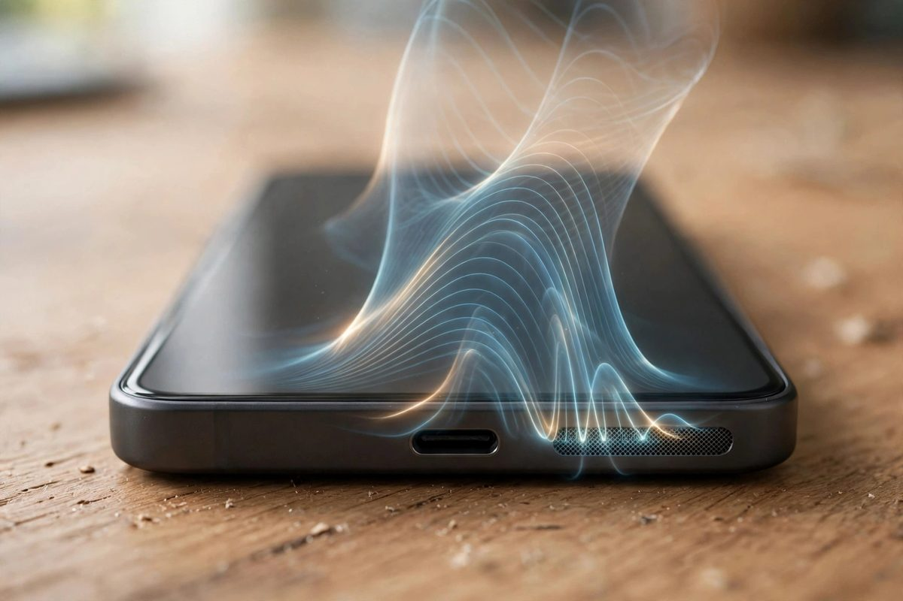

How Speaker Cleaner Apps Work

If your phone speaker sounds quiet, muffled, or crackly, you may have seen apps and websites that promise to clean it with sound. These speaker cleaner tools play special tones through your speaker, and the vibrations can help push out dust, lint, and trapped water. They are simple to use and you do not need to open your phone, but it helps to understand what is really happening inside the speaker so you know what to expect.
What a Speaker Cleaner App Actually Does
A phone speaker works by moving a thin diaphragm back and forth very quickly, pushing air that you hear as sound. A speaker cleaner app uses this same movement. Instead of music, it plays low-frequency tones and sweeping tones that rise and fall in pitch. These make the diaphragm move much further than normal speech or music does, and the strong, repeated movement shakes loose particles off the grille and can push small droplets of water out through its holes.
Think of it like shaking a rug to get dust out. There is no special cleaning chemical involved, just controlled vibration. The process usually takes 30 seconds to a couple of minutes, and you can repeat it if the first run does not fully clear the sound.
How Sound Waves Move Dust and Water
Dust and lint collect on a phone speaker because the grille is a small mesh with tiny holes, and the phone spends all day in pockets, bags, and hands. Over time, a thin layer of debris builds up over the holes and blocks sound from getting out clearly, which is why the speaker starts to sound muffled. When a cleaning tone plays, the diaphragm vibrates at a high amplitude, and that vibration travels through the grille. Loose particles are shaken free and fall away from the mesh, while the rapid air movement helps carry them out.
Water behaves differently. Drops sitting on the diaphragm or in the grille make sound distorted or quiet, and low tones are good at moving water because they make the diaphragm travel further, pumping droplets out through the grille. This is the same principle behind the water-eject feature on some smartwatches and phones, and it works best on small amounts of fresh water, with the phone held speaker-down so gravity helps.
Types of Cleaning Sounds
- Low-frequency tones: Steady tones around 100 to 400 Hz. These move the diaphragm the furthest, so they are the most effective at pushing out water and loosening stuck dust.
- Frequency sweeps: A tone that glides smoothly from a low pitch to a high pitch, or the other way round. Sweeps are useful because different particles respond to different frequencies, so sweeping covers more ground than a single tone.
- Noise bursts: Short pulses of white or pink noise that create sudden, strong vibrations to dislodge stubborn particles.
Most good cleaning tools combine a low tone with a sweep, because that combination handles both dust and water in one session. There is no single perfect frequency, and a tool that only plays one fixed tone is less effective than one that varies the sound.
What Speaker Cleaner Apps Cannot Fix
It is important to be honest about the limits. A speaker cleaner app can help with dust and small amounts of water, but it cannot fix hardware damage. If the speaker itself is blown, torn, or damaged by a drop, no sound will repair it. It also cannot fix water damage to the internal components, corrosion on the contacts, or a speaker that has stopped working because of a faulty connection. If your speaker makes no sound at all, or if it crackles at every volume even after cleaning, the problem is very likely hardware, and the phone needs a professional repair.
Sound cleaning cannot fix software problems either. If an update changed your audio settings, or one app plays quietly while the rest sound fine, the cause is software, not the grille. The honest rule is simple: if cleaning improves the sound, the problem was debris or water. If nothing changes after a few cycles and a gentle physical clean, the cause is something else.
How to Use a Speaker Cleaner App Effectively
Using a cleaner is straightforward, but a few steps make it work better. Turn media volume to maximum, remove the case, and hold the phone speaker-down so dust and water fall out. Play a cleaning cycle for 30 to 60 seconds with our speaker cleaner tool, then check the sound with music or a voice recording. If it still sounds muffled, run the cycle again, brushing visible dust off the grille first with a soft, dry brush. For water, repeat two or three times, then leave the phone speaker-down in a dry place for an hour.
Do not run cleaning tones for a long time at maximum volume. A few short cycles are more effective and safer than one long session, because prolonged loud playback can heat the speaker coil. If you are unsure whether the speaker improved, use the sound test tool to compare before and after.
Frequently Asked Questions
Do speaker cleaner apps really work?
Yes, for the right problems. They can help remove loose dust, lint, and small amounts of water from the speaker grille by vibrating the diaphragm. They do not fix hardware damage, blown speakers, or software faults.
Can a speaker cleaner app damage my phone?
When used sensibly, no. Short cleaning cycles at normal maximum volume are within what the speaker is designed to handle. Avoid running loud tones continuously for a long time, and never use a cleaner as a substitute for repairing a physically damaged speaker.
How often should I use a speaker cleaner?
Once every few weeks is enough for most people, or after your phone has been in a dusty place or got splashed. If the sound is already clear, there is no need to run it more often.
Related guides
You may also find these guides useful: